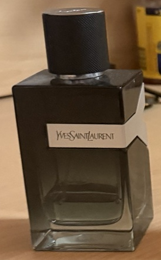

YSL Y Eau de Parfum. Photo by Pietro Barricelli.
Welcome to My Fragrance Guide
Choosing a fragrance is hard because there are many different scents and brands. Some fragrances smell fresh, but some smell sweet, dark, or woody. The right fragrance can help you feel more confident and match your personality. This website will help you understand fragrances and find the best scent for different situations.